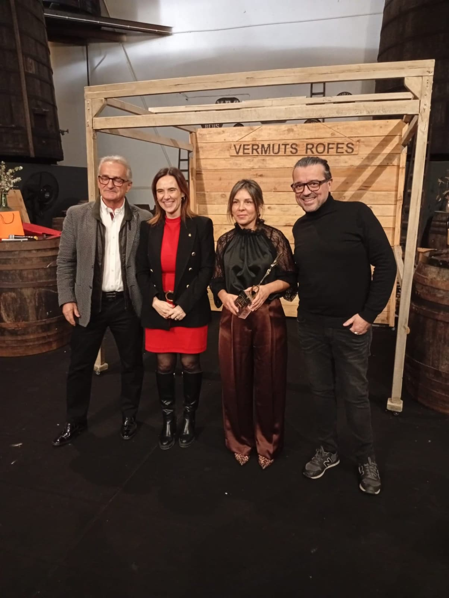
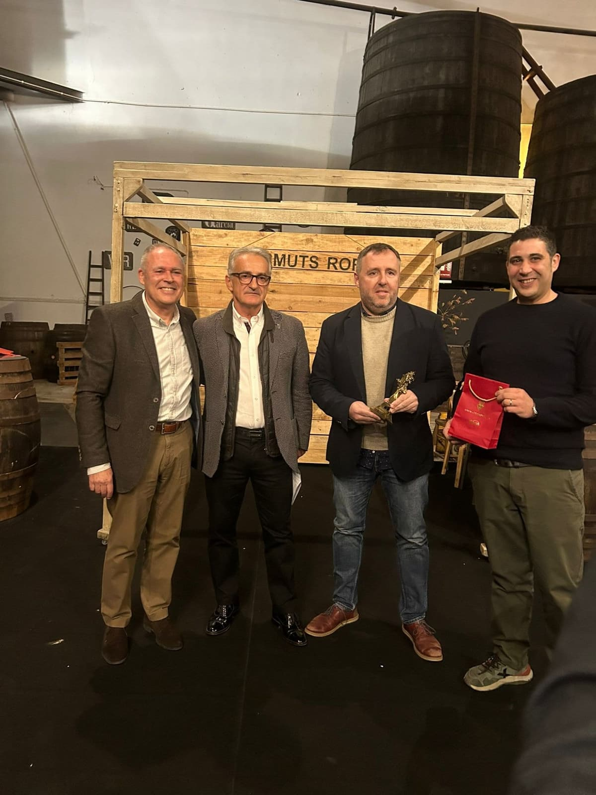

Empezó en 1998
El 25 de mayo de 2001, en Tarragona, un grupo de aficionados firmó el acta fundacional de la asociación, con un objetivo escrito en lenguaje de estatuto: la búsqueda, el conocimiento y la difusión de la gastronomía. Sin ánimo de lucro. El papel sigue diciendo hoy exactamente lo mismo, y lo que hacemos cada mes también.
Pero la asociación no empezó aquel día. Las cenas venían de 1998, tres años antes de que hubiera ningún papel de por medio. Lo de 2001 fue ponerle forma legal a una costumbre que ya existía: firmar lo que ya se hacía. Primero fue la mesa; después, los estatutos.
Detrás de esa fórmula hay una idea sencilla: la gastronomía como manera de conocer el territorio, su gente y su cultura. No se trata de coleccionar restaurantes, sino de entender un sitio comiendo en él.
Dicho en nuestras propias palabras
Somos una comunidad de apasionados por la gastronomía, dedicada a descubrir, valorar y celebrar lo mejor de la cocina del Camp de Tarragona.
Associació de Gourmets de TarragonaEsa frase se traduce en dos objetivos y en una manera de perseguirlos. Los objetivos: promover la gastronomía local —poniendo en valor el producto, la restauración y las personas que sostienen el sector cada día— y destacar la cocina del territorio, con su calidad y su diversidad.
Y la manera: apoyando a productores y restauradores de casa. Porque esto no va solo de salir a cenar y puntuar. Va de que la atención, el altavoz y también el dinero se queden en el territorio. Detrás de cada plato que nos sirven hay un payés, un pescador del Serrallo o un bodeguero que rara vez sale en la foto.
Cómo funcionaUn recorrido, no una lista
Cada temporada el comité elige ocho restaurantes del Camp de Tarragona buscando variedad de cocinas, de estilos y de niveles. No se trata de llenar un mapa, sino de armar un recorrido que tenga sentido: desde la cocina de producto más clásica hasta las propuestas más arriesgadas. El criterio es siempre el mismo —mesa, producto y territorio—.
Las cinco etapas de cada visita
1. La previa. Una semana antes publicamos en el blog la historia de la casa, el equipo y el menú acordado. · 2. La cena. Los que se apuntan —de media una treintena, y en algunas cenas casi el doble—, sin incógnito y sin prisa: hablamos con el equipo, preguntamos y disfrutamos. Es una cena, no una inspección. · 3. El voto. Al acabar, cada socio puntúa solo y en secreto. · 4. La crónica. Dos semanas después, con fotos y apuntes de la mesa, pero sin nota: las puntuaciones no se publican visita a visita. · 5. La gala. Hasta febrero no se suman las puntuaciones de toda la temporada.
Ocho criterios y una sola regla
Cada socio puntúa de forma independiente y anónima, del 1 al 5, sobre ocho criterios que recorren toda la experiencia. La media se calcula con todas las fichas recibidas, sin descartar ninguna: ni la más dura ni la más generosa. Y ningún criterio pesa más que otro. Esas notas no se hacen públicas con cada crónica: se guardan y se suman al cerrar el recorrido, de manera que hasta la gala nadie sabe en qué lugar ha quedado cada casa.
Conviene aclararlo
No somos influencers ni críticos profesionales, y ningún restaurante paga por aparecer en nuestras crónicas. No vivimos de esto: lo hacemos por afición, y esa es la razón por la que podemos celebrar lo bueno y comentar lo mejorable con la misma tranquilidad. Tampoco venimos a juzgar a nadie: la mirada es siempre la del reconocimiento al oficio.
Los premiosGastronia y Bacus, cada febrero
Al cerrar el recorrido se suman las puntuaciones de toda la temporada y se entregan tres reconocimientos en una gala pública: el primer y el segundo Trofeo Gastronia, a los dos mejores restaurantes del año, y el Premio Bacus, al vino que más nos sorprendió a lo largo del recorrido. La bodega ganadora es invitada de honor en la cena de entrega.


Una mesa abierta
La asociación está abierta a quien quiera compartir mesa, y la mejor manera de conocernos no es leernos: es venir a cenar. El camino es simple —escribir desde el formulario de contacto, venir a una visita acompañando a un socio y, si la cosa encaja por ambas partes, quedarse—. El aforo manda: no todas las cenas admiten acompañantes.
Veintiocho años después de aquellas primeras cenas, lo que mantiene esto en pie no son los premios ni las crónicas. Es que cada mes hay una mesa larga de gente con ganas de sentarse a ella y de preguntarle al cocinero cómo lo ha hecho.
Fuentes: estatutos y acta fundacional de la Associació Gourmets de Tarragona (Tarragona, 25 de mayo de 2001) y la página de la asociación de esta misma web. Imágenes: archivo propio.